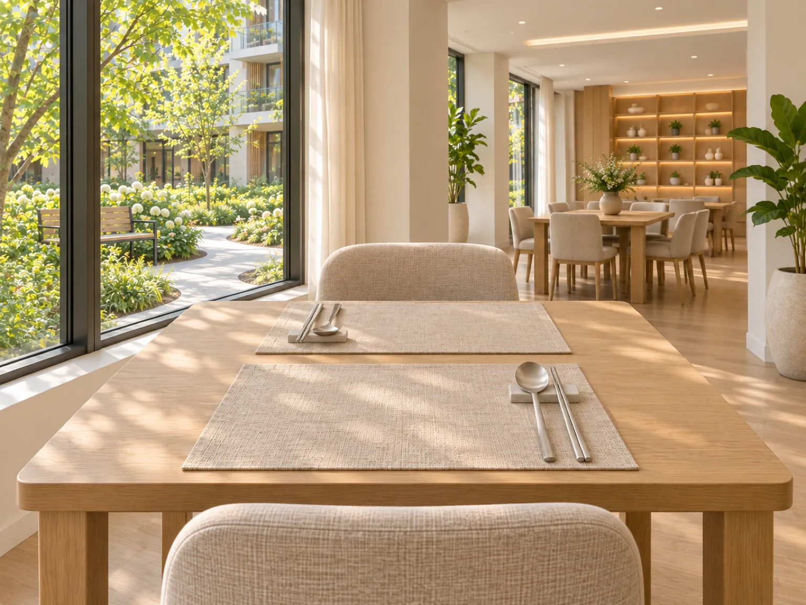
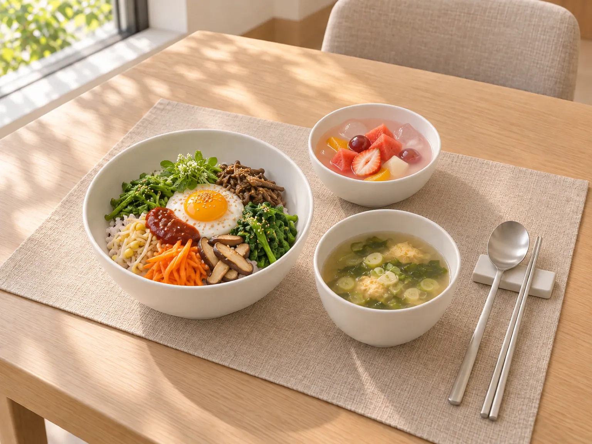
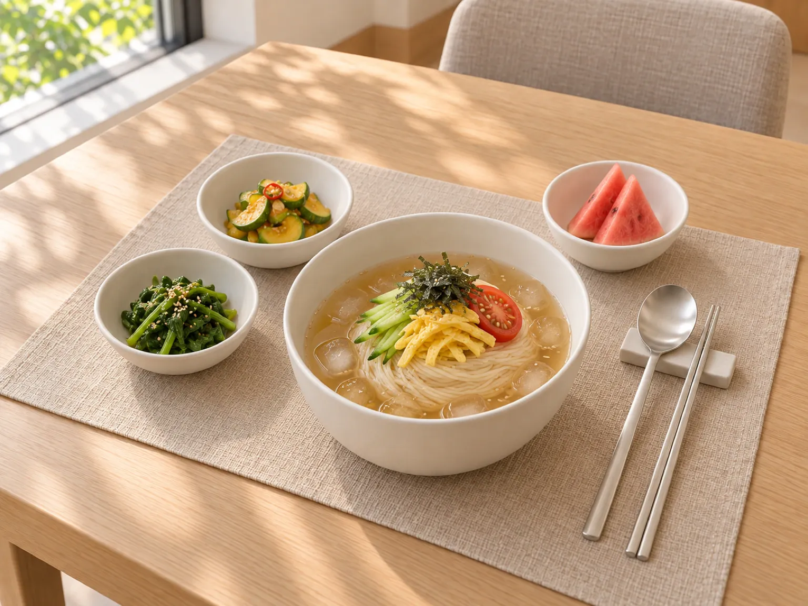
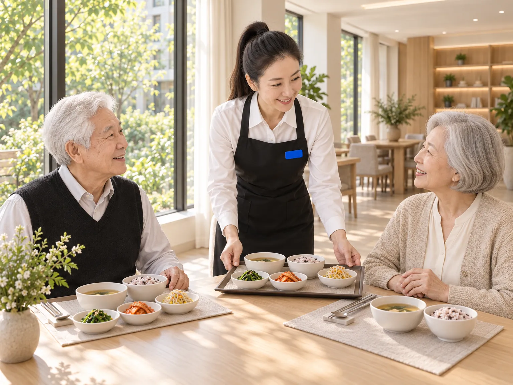

식사
1층 식당에서 아침, 점심, 저녁을 차려 드려요.

1층 식당은 창이 넓어 아침에는 햇빛이 들어요. 네 분이 앉는 식탁과 창가에 두 분 자리가 있어요.


하루 세 끼

아침. 밥이나 죽, 국과 반찬

점심. 밥과 국, 반찬

저녁. 밥과 국, 반찬
식사 시간은 프런트에 물어봐 주세요.
어떤 음식이 나오는지 보여 드리려고 만든 예시예요. 실제 식단은 계절과 재료에 따라 바뀌어요.
| 요일 | 아침 | 점심 | 저녁 |
|---|---|---|---|
| 월 | 쌀밥 또는 흰죽 · 북엇국 · 두부부침 · 숙주나물 · 물김치 | 잡곡밥 · 미역국 · 제육볶음 · 애호박볶음 · 도라지무침 · 배추김치 | 쌀밥 · 아욱된장국 · 가자미구이 · 감자조림 · 오이무침 · 깍두기 |
| 화 | 쌀밥 또는 호박죽 · 맑은 콩나물국 · 계란말이 · 비름나물 · 물김치 | 잡곡밥 · 쇠고기뭇국 · 닭찜 · 두부 브로콜리무침 · 미나리무침 · 배추김치 | 쌀밥 · 근대된장국 · 동태전 · 청포묵무침 · 콩나물무침 · 깍두기 |
| 수 | 흰죽 또는 쌀밥 · 맑은 뭇국 · 계란찜 · 취나물 · 물김치 · 과일 | 잡곡밥 · 된장국 · 코다리조림 · 고사리나물 · 무나물 · 배추김치 | 잡곡밥 · 콩나물국 · 고등어구이 · 두부조림 · 시금치나물 · 깍두기 |
| 목 | 쌀밥 또는 잣죽 · 시금치된장국 · 연두부와 양념장 · 멸치볶음 · 물김치 | 잡곡밥 · 버섯들깨탕 · 불고기 · 잡채 · 오이소박이 | 쌀밥 · 감잣국 · 조기구이 · 메추리알장조림 · 참나물무침 · 배추김치 |
| 금 | 쌀밥 또는 단호박죽 · 순두부국 · 동그랑땡 · 무나물 · 물김치 | 잡곡밥 · 오이냉국 · 닭갈비 · 감자채볶음 · 상추겉절이 · 배추김치 | 쌀밥 · 된장찌개 · 삼치구이 · 꽈리고추멸치볶음 · 가지나물 · 깍두기 |
| 토 | 쌀밥 또는 흰죽 · 두부계란국 · 김구이 · 애호박나물 · 물김치 | 잡곡밥 · 호박잎된장국 · 돼지고기수육과 쌈채소 · 무말랭이무침 · 배추김치 | 쌀밥 · 쑥국 · 갈치구이 · 연근조림 · 숙주나물 · 깍두기 |
| 일 | 쌀밥 또는 녹두죽 · 맑은 감잣국 · 두부부침 · 도라지나물 · 물김치 | 콩나물밥과 양념장 · 맑은 된장국 · 너비아니구이 · 시금치나물 · 배추김치 | 쌀밥 · 미역국 · 가자미조림 · 고구마줄기볶음 · 오이무침 · 깍두기 |
아침쌀밥 또는 흰죽 · 북엇국 · 두부부침 · 숙주나물 · 물김치
점심잡곡밥 · 미역국 · 제육볶음 · 애호박볶음 · 도라지무침 · 배추김치
저녁쌀밥 · 아욱된장국 · 가자미구이 · 감자조림 · 오이무침 · 깍두기
아침쌀밥 또는 호박죽 · 맑은 콩나물국 · 계란말이 · 비름나물 · 물김치
점심잡곡밥 · 쇠고기뭇국 · 닭찜 · 두부 브로콜리무침 · 미나리무침 · 배추김치
저녁쌀밥 · 근대된장국 · 동태전 · 청포묵무침 · 콩나물무침 · 깍두기
아침흰죽 또는 쌀밥 · 맑은 뭇국 · 계란찜 · 취나물 · 물김치 · 과일
점심잡곡밥 · 된장국 · 코다리조림 · 고사리나물 · 무나물 · 배추김치
저녁잡곡밥 · 콩나물국 · 고등어구이 · 두부조림 · 시금치나물 · 깍두기
아침쌀밥 또는 잣죽 · 시금치된장국 · 연두부와 양념장 · 멸치볶음 · 물김치
점심잡곡밥 · 버섯들깨탕 · 불고기 · 잡채 · 오이소박이
저녁쌀밥 · 감잣국 · 조기구이 · 메추리알장조림 · 참나물무침 · 배추김치
아침쌀밥 또는 단호박죽 · 순두부국 · 동그랑땡 · 무나물 · 물김치
점심잡곡밥 · 오이냉국 · 닭갈비 · 감자채볶음 · 상추겉절이 · 배추김치
저녁쌀밥 · 된장찌개 · 삼치구이 · 꽈리고추멸치볶음 · 가지나물 · 깍두기
아침쌀밥 또는 흰죽 · 두부계란국 · 김구이 · 애호박나물 · 물김치
점심잡곡밥 · 호박잎된장국 · 돼지고기수육과 쌈채소 · 무말랭이무침 · 배추김치
저녁쌀밥 · 쑥국 · 갈치구이 · 연근조림 · 숙주나물 · 깍두기
아침쌀밥 또는 녹두죽 · 맑은 감잣국 · 두부부침 · 도라지나물 · 물김치
점심콩나물밥과 양념장 · 맑은 된장국 · 너비아니구이 · 시금치나물 · 배추김치
저녁쌀밥 · 미역국 · 가자미조림 · 고구마줄기볶음 · 오이무침 · 깍두기



식사를 거르실 날이 있으면
거르실 끼니를 프런트에 미리 말씀해 주세요. 직원이 적어 두면 그 끼니 값은 청구서에서 빼 드려요.
청구서에는 몇 끼에 얼마를 뺐는지 이유와 함께 적혀 있어요.

부드러운 음식이 필요하시거나 알레르기가 있으시면 상담 때 말씀해 주세요.
궁금하신 점이 있으면 상담을 신청해 주세요. 숙소와 비용은 상담 때 안내해 드려요.